Vet vi egentlig
det vi tror vi vet?
Vitenskapsfilosofi (bekreftelse og verdier) og hermeneutikk
Tenk! Del 2 (kap. 7–10), Del 3 (kap. 11) · Thomassen, «Hermeneutikk som refleksjon og livsfortolkning»
Flammarion-tresnittet, i L'atmosphère (1888). Public domain
Noen forventninger
- Vær oppmerksom: f.eks. slides på én skjerm og notater/Tenk! på den andre, eller papir og Tenk! foran deg
- Ikke forstyrr andre: annet på skjermen, prating, osv.
- Bli kjent med begrepene på forhånd. Usikker på noe? Se siste slide, med sidetall
- Du velger selv om du fullfører forelesningsarbeidet underveis (det dekker alle de viktige teoriene)
- Jeg går gjennom kjernen, ikke alt
- Still spørsmål underveis
- Dette er et forsøk: vær tålmodig med oss denne første gangen
- FLA-spørsmålene er merket på slidene, sammen med sidetall i Tenk!
Hypotetisk-deduktiv metode
- 1. Formuler en hypotese
- 2. Utled en prediksjon fra hypotesen
- 3. Test prediksjonen
- 4. Bekreft eller avkreft hypotesen ut fra resultatet
John Snow og koleraen i London, 1854
- Hypotese: forurenset vann fra Broad Street-pumpen sprer kolera
- Prediksjon: fjernes pumpehåndtaket, bør nye tilfeller synke
- Test: håndtaket ble fjernet 8. september 1854
- Resultat: færre nye tilfeller. Hypotesen styrket, men utbruddet var alt på retur
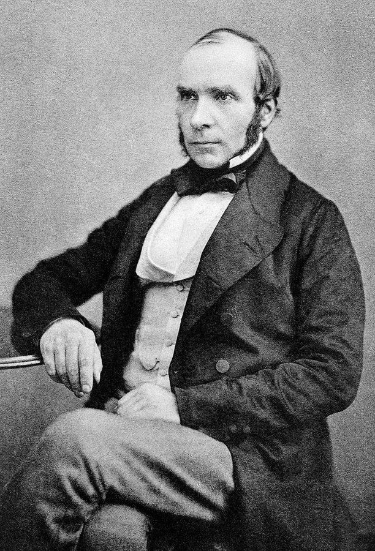
John Snow (1813–1858). Engelsk lege.
Kjent for: koleraundersøkelsen i Soho, «On the Mode of Communication of Cholera» (1855)
Public domain
Oversikt
Kjerne
- Tre spørsmål VM: Norge slo Brasil
- Svak bekreftelse brokkolivann
- Sterk bekreftelse streptomycin, 1948
- Kornete bevis Nessie
- Lagquiz: hva bekrefter en hypotese?
- Ekstra: Nessie
Fordypning
- Svak og sterk bekreftelse solformørkelsen 1919
- Base rate sjelden sykdom, positiv test
- Spørsmål: base rate
- Overraskende? dødsfall etter vaksinen
- Spørsmål: spøkelset og boka
Overraskelsesprinsippet: tre spørsmål
- Er e forventet hvis h er sann?
- Er e overraskende hvis h er usann?
- Er h sannsynlig i utgangspunktet? (base rate)
1 og 2: hvor mye e bekrefter h. 1, 2 og 3: hvor stor tillit vi til slutt bør ha til h.
Norge slo Brasil 2 til 1
- Norge tilbake i VM for første gang siden 1998, til kvartfinale
- Et overraskende resultat: bekrefter «vi er faktisk gode nok» sterkere enn en ventet seier ville gjort
- Men sterk bekreftelse er ikke det samme som sikkerhet: én kamp er én kamp
Foto: Bryan Berlin / WikiPortraits, CC BY-SA 4.0
Brokkolivann mot forkjølelse
h: «brokkolivann kurerer forkjølelse». e: du drikker det og er frisk etter 14 dager.
| 1. Er e forventet hvis h er sann? | Ja |
| 2. Overraskende hvis h er usann? | Nei: de fleste er friske etter 14 dager uansett |
| 3. Sannsynlig i utgangspunktet? | Lite: ingen kjent virkningsmekanisme |
Svak bekreftelse og lav tillit. Spår du «frisk etter ett døgn», blir e mer overraskende (2), men 3 er like lav.
Streptomycin mot tuberkulose, 1948
h: «streptomycin virker mot lungetuberkulose». e: 107 pasienter fordelt ved loddtrekning. Etter seks måneder var 7 % døde med streptomycin, mot 27 % med bare sengeleie.
| 1. Er e forventet hvis h er sann? | Ja |
| 2. Overraskende hvis h er usann? | Ja: loddtrekningen gjør tilfeldighet og skjeve grupper lite sannsynlig |
| 3. Sannsynlig i utgangspunktet? | Ganske: stoffet drepte tuberkelbasiller i laboratoriet og hjalp syke marsvin |
Sterk bekreftelse og høy tillit, men fortsatt ikke sikkerhet.
Nessie: «det kornete beviset»
- Skeptikeren: «Bemerkelsesverdige påstander krever bemerkelsesverdig evidens»
- En stor sjøorm i Loch Ness strider mot mye av det vi vet om biologi og zoologi
- Et kornete og uklart bilde kan forestille mye rart
- Samme poeng, sagt med de tre spørsmålene?
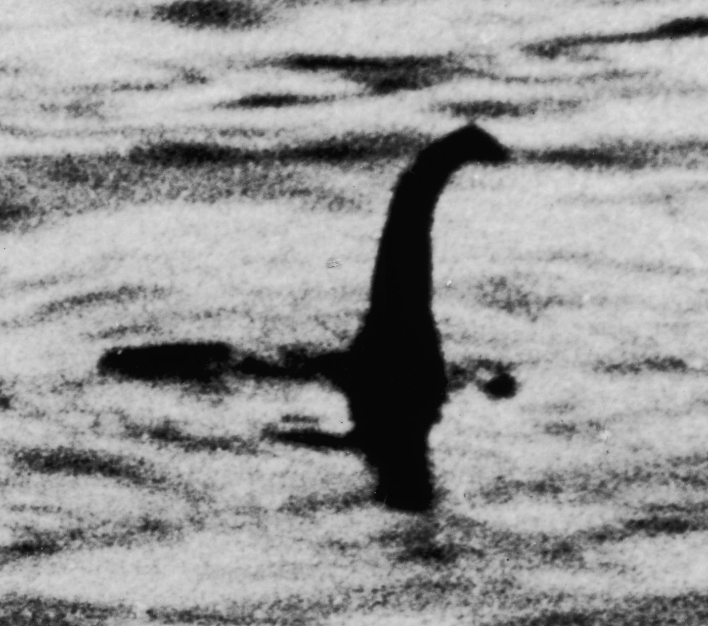
«The Surgeon's Photograph», 1934 (kjent forfalskning). Public domain
Hvilke av de tre spørsmålene avgjør om observasjonen bekrefter hypotesen, ikke bare hvor stor tillit vi bør ha?
Tenk! ss. 113–6
Et kornete bilde er det mest kjente «beviset» for Loch Ness-sjøormen. Skeptikeren: en sjøorm strider mot biologien, og bildet kan forestille mye rart. Hva er en tilsvarende måte å fremstille innvendingen på?
Tenk! ss. 113–6
Fordypning
Svak og sterk bekreftelse
- Svak: h = «en mer smittsom virusvariant sprer seg», e = flere blir smittet
- Flere smittede kunne skyldes mye annet (vinter, færre tiltak)
- Sterk: Einstein forutsa at sola bøyer lys. Uten teorien ville målingen i 1919 vært en stor overraskelse
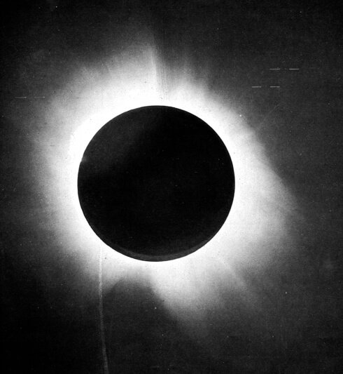
Solformørkelsen 29. mai 1919
Dyson, Eddington og Davidson (1920). Public domain
Base rate
Positiv test: omtrent 1 av 10 000 sjanse for å være syk. En testfeil er langt mer sannsynlig enn sykdommen.
Testen bekrefter sykdom (spørsmål 1 og 2), men lav base rate (3) gir likevel lav tillit.
Sykdom: 1 av 1 million. Test: 99 % pålitelig. Du tester positivt. Hvor sannsynlig er det at du er syk?
Tenk! ss. 115–6
Overraskende? Dødsfall etter vaksinen
- Januar 2021: flere på sykehjem døde få dager etter koronavaksinen
- Forventet hvis vaksinen er farlig. Men overraskende hvis den er trygg?
- Nei: de eldste og sykeste ble vaksinert først, og rundt 400 dør i uka på norske sykehjem
- Å vurdere 2 og 3 krever bakgrunnskunnskap
Hver natt kl. 02.13 faller samme bok ut av hylla, selv om Bjørn sjekker den. Det var forrige eiers yndlingsbok. Hypotese: det spøker. Hva sier overraskelsesprinsippet?
Tenk! ss. 113–6
Oversikt
Kjerne
- Tre måter verdier virker inn Pluto
- KUDOS-normene Merton
- Situert kunnskap Longino og Harding, kjønnshormonene
- Lagquiz: situert kunnskap
- Ekstra: universalisme
Fordypning
- Rangering: KUDOS
- Spørsmål og svar publikasjonsbias
- Spørsmål: 200 variabler og kreft
- Standpunktteori Harding
- Åpent svar: når blir verdier et problem?
Tre måter verdier virker inn
- Hvordan vi sorterer: Pluto ble «dvergplanet» i 2006
- Hvilke spørsmål vi stiller (oppdragsforskning, lite forskning på «kvinnesykdommer»)
- Hvor mye evidens vi krever før vi handler
Pluto, New Horizons 2015
NASA/JHUAPL/SwRI. Public domain
KUDOS-normene (Merton)
- Kommunalisme: kunnskap deles
- Universalisme: vurdér innhold, ikke avsender
- Disinteresserthet: ikke egeninteresse
- Organisert Skepsis: kritisk prøving
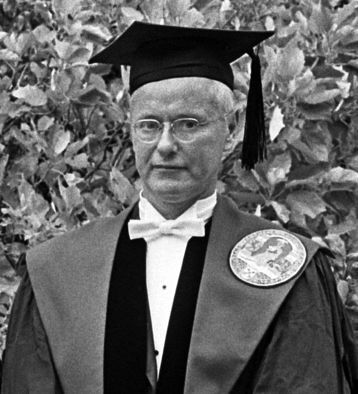
Robert K. Merton (1910–2003). Amerikansk sosiolog.
Hovedverk: «The Normative Structure of Science» (1942)
Foto 1965. CC0
Longino og Harding
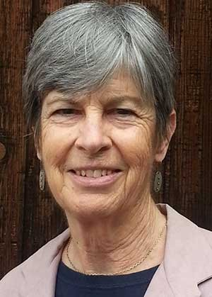
Helen Longino (f. 1944). Amerikansk filosof.
«The Fate of Knowledge» (2002)
Helen E. Longino, CC BY-SA 4.0
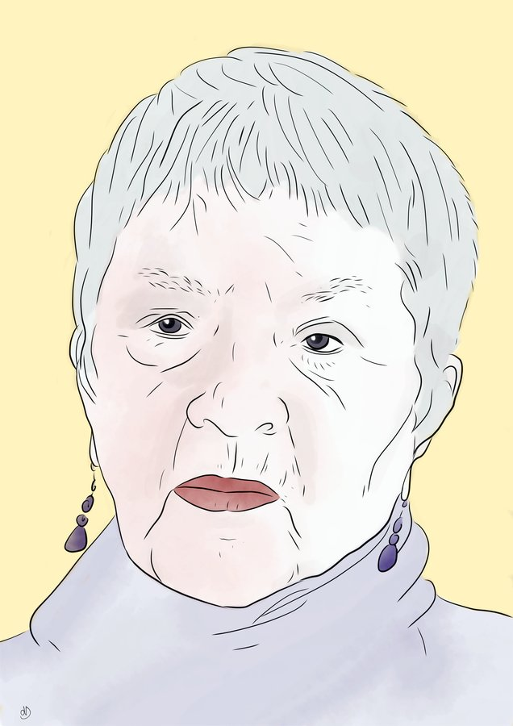
Sandra Harding (1935–2025). Amerikansk filosof.
«The Science Question in Feminism» (1986)
Mina Kara, CC BY-SA 4.0
Sentrale i standpunktepistemologi og kritikken av «verdifri» vitenskap. Longino: «prosedyrekriterier» som alternativ til KUDOS (ss. 127, 129)
Situert kunnskap
- Kunnskap produseres fra et sosialt eller historisk ståsted
- Utfordrer KUDOS' ideal om en nøytral forsker
- Eksempel: rundt 1920 så man «mannlige» og «kvinnelige» kjønnshormoner som motsetninger. At alle har begge, ble godtatt på 1930-tallet
Hva innebærer «situert kunnskap»?
Tenk! ss. 126–8
Hva går normen om universalisme ut på?
Tenk! s. 123
Fordypning
Ranger KUDOS-normene
Vanskeligst til lettest å følge i praksis
- Kommunalisme
- Universalisme
- Disinteresserthet
- Organisert skepsis
Spørsmål vs. svar
- At interesser styrer spørsmålene, gjør ikke svarene ugyldige
- Det avgjøres av metoden: er svaret funnet på en pålitelig måte?
- Men publikasjonsbias og p-hacking gir falske positive funn
En studie tester 200 mulige risikofaktorer for kreft. De som bor ved trafikkert vei har 30 % mer kreft (99 % sikkert ikke tilfeldig). Største problem?
Tenk! ss. 124–5
Harding: standpunktteori
- Marginaliserte ser både sitt eget og det dominerende perspektivet
- Mangfold gir ikke garantert objektivitet, men flere spørsmål
- Realisme, ikke relativisme: noen ståsteder ser mer av virkeligheten
- Gir ståstedet en fordel i oppdagelsen, eller i begrunnelsen?
Når blir verdier et problem?
Når kan verdier gjøre forskning dårligere, og hva kan motvirke det?
Oversikt
Åpning: and eller kanin? (ordsky). To bilder til på slutten
Kjerne
- Teoriavhengighet kart og terreng
- Å lære å se mikroskopet
- EBM fallskjerm, østrogen
- Popper og Kuhn Kuhns syklus
- Semmelweis håndvask
- Anomalier Uranus
- Lagquiz: Popper vs. Kuhn
- Ekstra: Uranus
Fordypning
- 9A Normalvitenskap
- Semmelweis med to par briller diskusjon
- Normalvitenskap to spørsmål
- Oppdagelse og begrunnelse Kekulé, Tu Youyou
- 9B Hva ser vi?
- Innvending Müller-Lyer
- Kategorier hvalen
- 9C Fremskritt og sannhet
- Fremskritt? er medisinen bedre?
- Realisme og relativisme Ramses II
- Galileo-gambiten
- 9D Kuhn i dag
- MikroRNA eksamen H24
- Ordsky: to bilder til
Hva ser du?
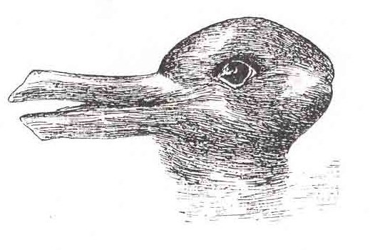
1890-årene. Public domain
Teoriavhengighet
- Det vi «ser», formes av teorien vi har, slik kart tegnes etter interesser
- Ingen kart er teorinøytrale
- Utfordrer realismen: relativisme? konstruktivisme?
- Men terrenget avgjør om kartet stemmer
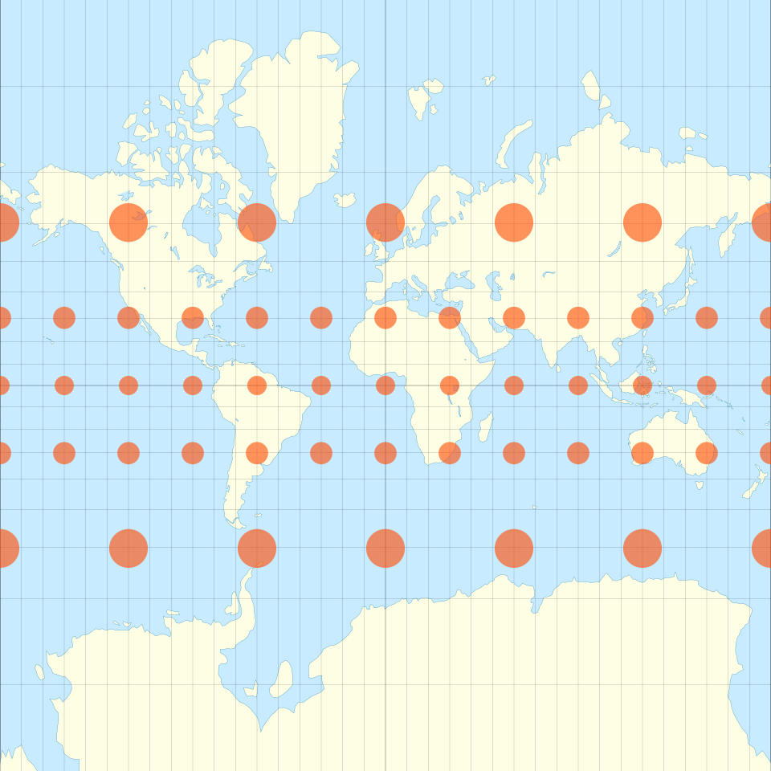
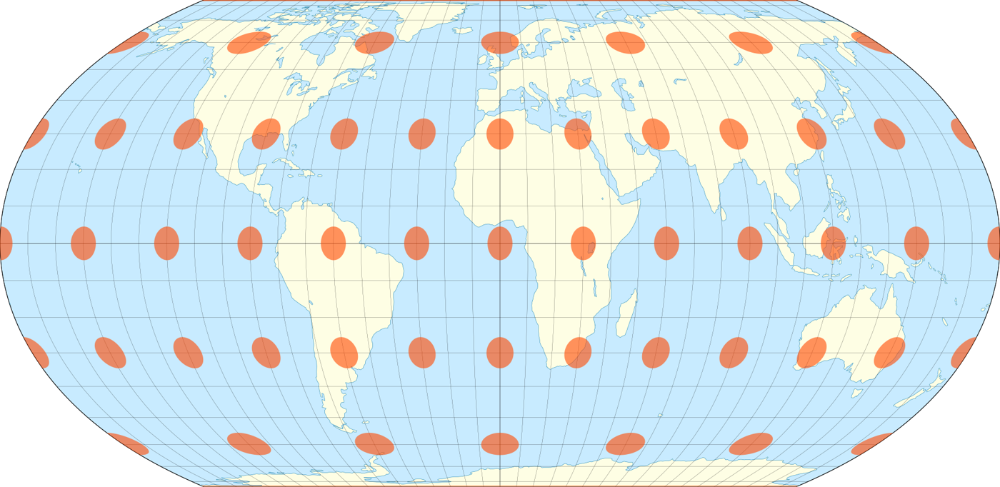
Like store sirkler på jorda: Mercator, så FNs nye kart (Equal Earth, 2026)
Justin Kunimune, CC BY-SA 4.0 og CC0
Hva ser du i mikroskopet?
- Lekperson: tre fargede former
- Bioingeniør: erytrocytt, trombocytt og leukocytt
- Å lære et fag er å lære å se
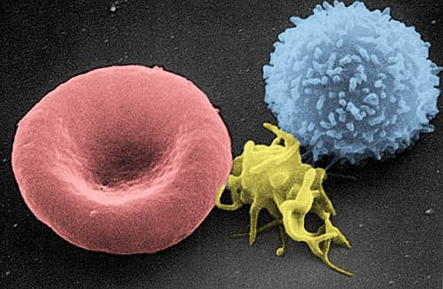
Elektronmikroskop, fargelagt
National Cancer Institute. Public domain
… og evidensbasert medisin
- b) EBMs «rene fakta» (RCT-data) er også teoriavhengige. Hvilke utfall som telles, måles og vektlegges er teoristyrt
- c) Derfor er ikke EBM-hierarkiet nøytralt. Det skjuler egne teoretiske og normative valg bak en positivistisk selvforståelse
EBM: fallskjerm og østrogen
- Fallskjerm og lårhalsbrudd: sikker viten uten RCT
- EBMs metode er altså ikke nødvendig for helsekunnskap
- (Dårlig) EBM er heller ikke tilstrekkelig: RCT-en fra 2018 brukte fly på bakken
- Men RCT trengs ved små effekter: østrogen virket beskyttende, RCT-er viste skade
Popper og Kuhn
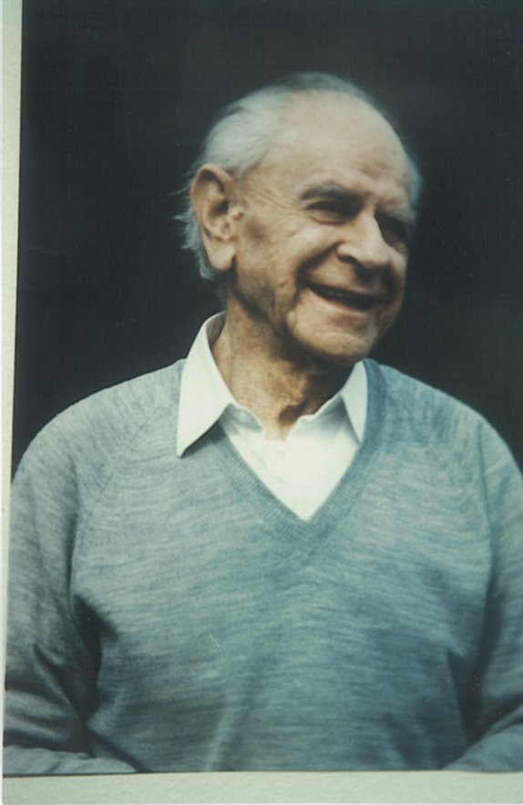
Popper (1902–1994). Østerriksk-britisk filosof.
«Logik der Forschung» (1934)
DorianKBandy, CC BY-SA 4.0
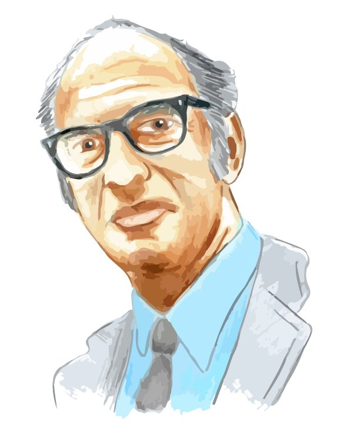
Kuhn (1922–1996). Amerikansk vitenskapshistoriker.
«The Structure of Scientific Revolutions» (1962)
Davi.trip, CC BY-SA 4.0
Popper vs. Kuhn
- Popper: hypoteser må kunne falsifiseres
- Kuhn: paradigmer beskyttes mot enkeltavvik
- Inkommensurabilitet: paradigmer uten felles målestokk (s. 135)
Kuhns syklus
Paradigme: felles bakgrunnsteori, metoder, begreper og mønstereksempler
Semmelweis og håndvask
- Håndvask ga langt færre dødsfall av barselfeber
- Datidens leger avviste ham likevel i årevis
- Hvorfor? Sykdom kom fra «dårlig luft» (miasma), ikke fra legenes hender
Miasmelæren tok feil om årsaken, men ga kloakk og lufting: riktig tiltak, feil grunn
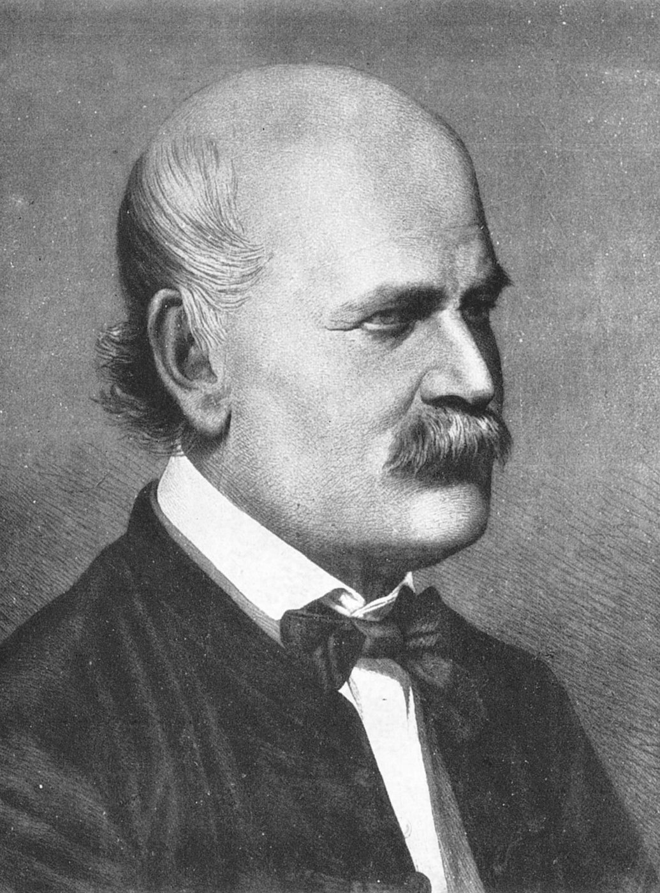
Ignaz Semmelweis (1818–1865). Ungarsk lege.
Hovedverk: «Die Ätiologie... des Kindbettfiebers» (1861)
Portrett 1860. Public domain
Semmelweis steg for steg
- Legestudentenes fødeavdeling: langt høyere dødelighet enn jordmødrenes
- Forkastet først: fødestillingen, og presten som ringte med bjelle på vei til de døende
- En kollega fikk et skalpellkutt under obduksjon og døde av det samme: «likstoff»?
- Håndvask i klorkalk: dødeligheten falt kraftig
Uranus gikk feil vei
- 1800-tallet: Uranus' bane stemte ikke med Newton
- Adams og Le Verrier (1846): en ukjent planet lenger ute?
- Neptun ble funnet. Men var hypotesen ad hoc?
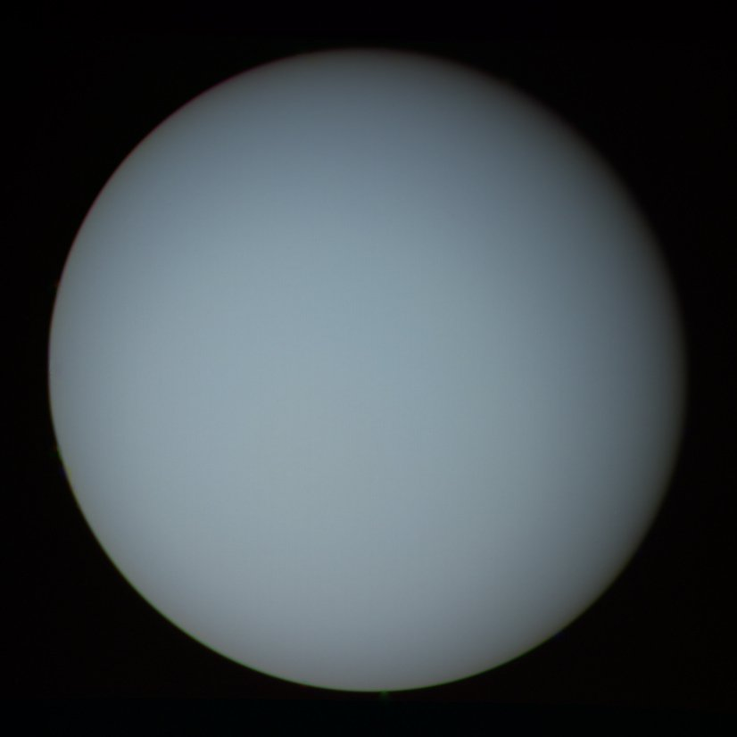
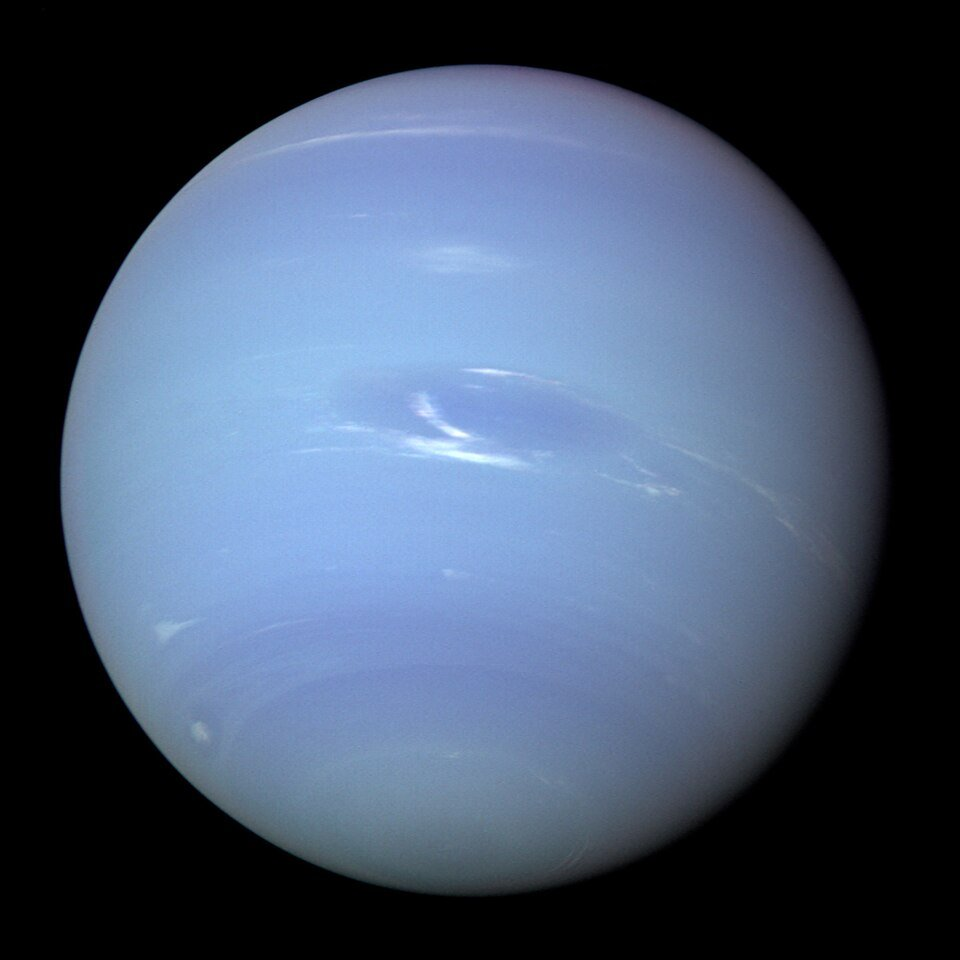
Uranus og Neptun, Voyager 2. NASA/JPL, public domain
Forskjellen mellom Poppers og Kuhns syn?
Tenk! ss. 107–11, ss. 132–8
Uranus fulgte ikke Newtons lover. Man antok en ukjent planet. Hvordan ville Kuhn beskrevet det?
Tenk! ss. 106, 132–5
Fordypning
Semmelweis med to par briller
- Popper: hvilke hypoteser ble falsifisert, og hvordan?
- Kuhn: hvorfor avviste legene ham, tross gode tall?
- Hva sier saken om forholdet mellom evidens og paradigme?
Normalvitenskap
- Arbeid innenfor paradigmets forutsetninger
- Stadig mer sofistikerte hypoteser, testet: «puslespill»
Hva er «normalvitenskap» i praksis?
Tenk! s. 132
Kuhns definisjon av «normalvitenskap»?
Oppdagelse vs. bekreftelse
- Hvor h kommer fra er noe annet enn hva som støtter h
- Kekulé: benzenringen kom i en drøm
- Tu Youyou: malariamedisin funnet i gamle tekster
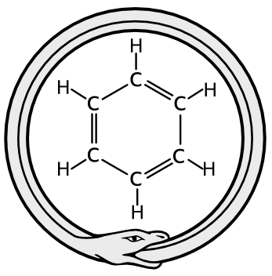
Ouroboros: DMGualtieri, CC BY-SA 3.0 · Tu Youyou: Bengt Nyman, CC BY-SA 4.0
Hvorfor skille oppdagelses- og bekreftelseskontekst?
Bestemmer teorien hva vi ser?
- Hvilken linje er lengst?
- Like lange, men ser ulike ut selv når vi vet det
- Sansene følger ikke bare teorien, og vi kan måle oss ut av feilen
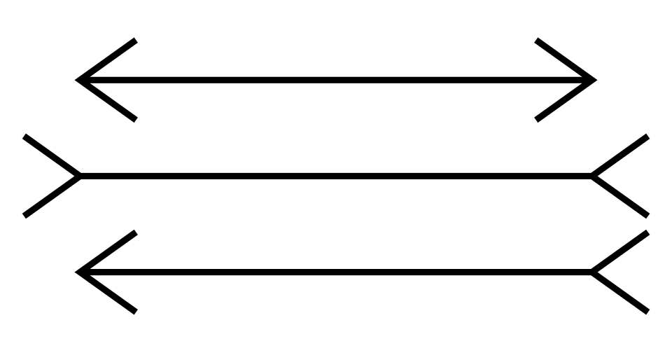
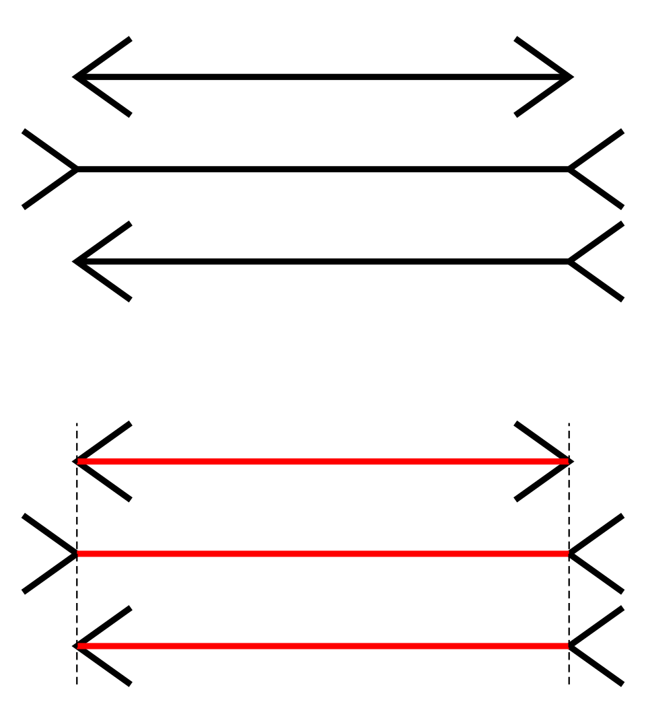
Müller-Lyer: Fibonacci, CC BY-SA 3.0
Hval: fisk eller pattedyr?
- Lenge regnet som fisk, nå pattedyr
- Kategorier er en del av paradigmet
- Endret hvalen seg, eller bare kartet vårt?
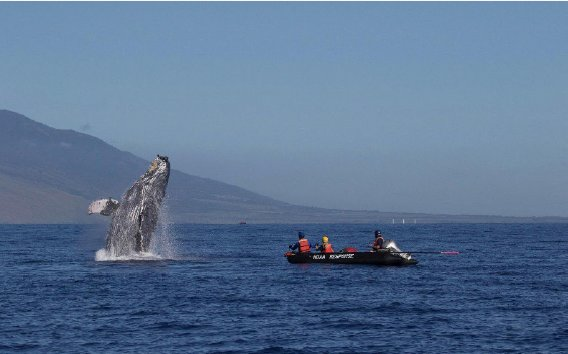
Knølhval
J. Moore/NOAA. Public domain
Hvor enig er du i utsagnet
«Det er paradigmet som bestemmer at hvalen er et pattedyr»
1 (uenig) til 5 (enig)
Fremskritt?
- Inkommensurabilitet: ingen nøytral målestokk mellom paradigmer?
- I så fall er det vanskelig å si at vitenskapen går fremover
- Men Newton og Einstein kan enes om hvor Merkur står på himmelen
- Kuhn selv avviste relativisme
Bedre, eller bare annerledes?
«Medisinen i dag er bedre enn i middelalderen, ikke bare annerledes»
1 (uenig) til 5 (enig)
Realisme og relativisme
- Realisme: virkeligheten finnes uavhengig av oss og avgjør hvilke teorier som stemmer
- Relativisme: hva som er riktig, avhenger av paradigmet
- Ramses II døde ca. 1213 f.Kr. I 1976 fant forskere spor av tuberkulose i mumien
- Latour: anakronisme! Basillen ble først oppdaget i 1882. Hadde farao tuberkulose, eller ikke?
Hvorfor ikke relativisme?
- Bias er bare et problem hvis det finnes et terreng å bomme på
- Relativisme: vi kan aldri ta feil, og trenger aldri lytte til andre
- Da blir relativisme selv en form for dogmatisme
- Realisme krever ydmykhet: vi kan alltid ta feil
Galileo-gambiten
- «De lo av Galileo, og nå ler de av meg»
- De fleste som bryter med konsensus, tar feil
- Konsensus vinnes med evidens, ikke makt
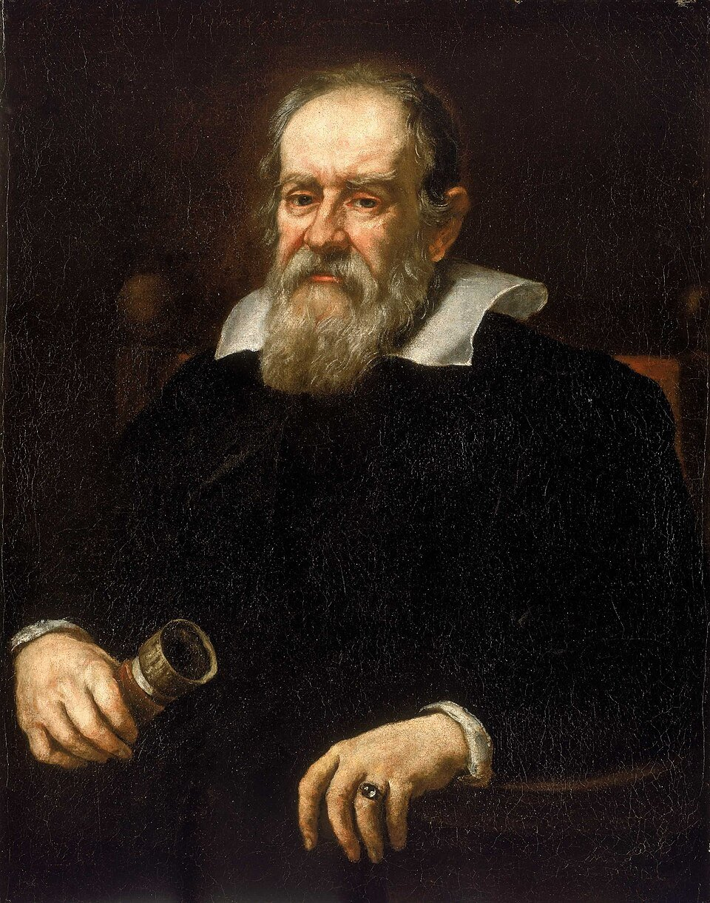
Galileo Galilei (1564–1642). Italiensk naturforsker.
«Dialog om de to verdenssystemene» (1632)
Justus Sustermans, 1636. Public domain
Nobelprisen 2024: mikroRNA
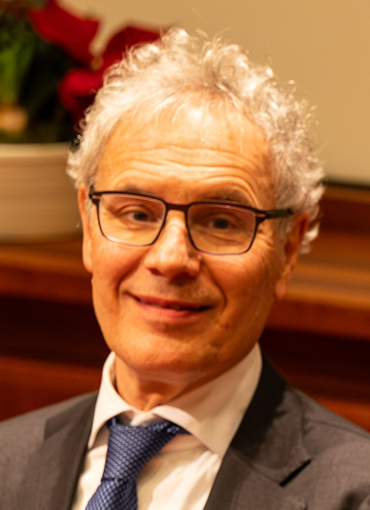
Victor Ambros (f. 1953). Amerikansk utviklingsbiolog
Arthur Petron, CC BY-SA 4.0
Gary Ruvkun (f. 1952). Amerikansk molekylærbiolog
John Sears, CC BY-SA 4.0
Oppdaget mikroRNA: små RNA-molekyler som regulerer hvilke gener som blir til protein
Kuhn-revolusjon i biologien?
- Gammelt paradigme: gener koder (mest) for proteiner
- Anomalier: introner, «søppel-DNA», mye RNA som aldri blir protein
- Mattick (2023): de fleste gener lager regulerende RNA, et paradigmeskifte
Revolusjon eller normalvitenskap?
- Er mikroRNA en anomali, eller starten på et nytt paradigme?
- Er endringen et fremskritt? Målt med hvilken målestokk?
- Samme spørsmål som eksamen H24, oppgave 2
Hva ser du?
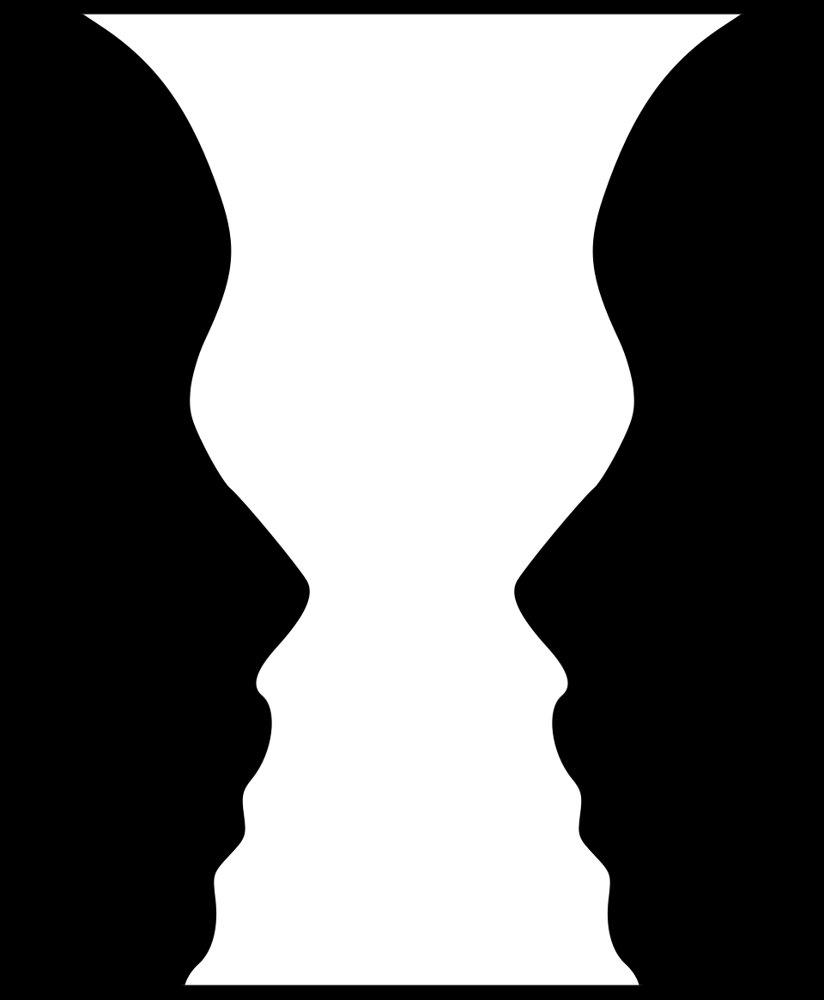
Bryan Derksen, CC BY-SA 3.0
Hva ser du?
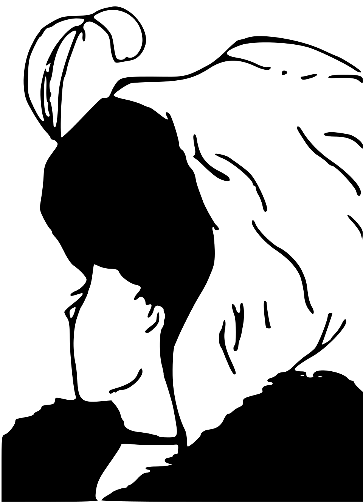
W. E. Hill (1915). Public domain
Oversikt
Kjerne
- To paradigmer bro fra kap. 9
- Fire årsaker statue, løve, menneske
- Teleologi eikenøtt og eik
- Mekanistisk natursyn hjertet som pumpe
- Teleologisk forklaring storjordspurven
- Lagquiz: nebbet
- Ekstra: teleologisk natursyn
Fordypning
- Fire typer forandring eplet
- Spørsmål: mekanistisk natursyn
- Primære og sekundære egenskaper blodverdier
- Homeostase klarer vi oss uten formål?
- En utfordring til Tenk! «utvilsomt»
To paradigmer for naturen
- Teleologisk: naturen streber mot mål (Aristoteles, fram til ca. 1600)
- Mekanistisk: naturen som maskin (Galilei, Descartes, Newton)
- Et paradigmeskifte (Kuhn); i dag antropocen, mennesket selv påvirker jorden mest (s. 154)
Teleologisk og mekanistisk
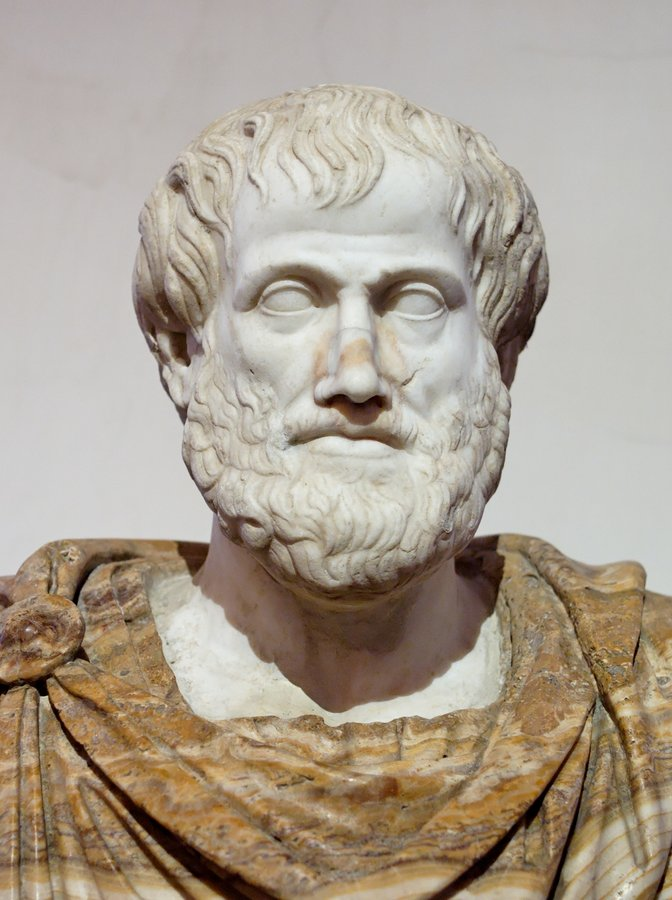
Aristoteles (384–322 f.Kr.). Gresk filosof.
Naturen som formålsrettet
Byste. Public domain

René Descartes (1596–1650). Fransk filosof.
«L'Homme» (1664): kroppen som maskin
Public domain
Aristoteles' fire årsaker
| Statue | Løve | Menneske | |
|---|---|---|---|
| Materiell: stoffet | Bronse | Knokler, kjøtt, blod | Kroppen |
| Formal: formen | Statuens form | Det en løve er | Sjelen, fornuften |
| Bevirkende: opphavet | Kunstneren | Foreldrene | Foreldrene |
| Formål: målet | Å hedre den avbildede | Å leve ut løvens natur | Et godt liv (eudaimonia) |
Menneskets mål er et godt liv: derfor er dydsetikken teleologisk
Teleologi som natursyn
- Naturlige ting har et telos (formål) de streber mot
- Eikenøtta har eiketreet i seg som mulighet
- Forandring: fra mulighet til virkelighet
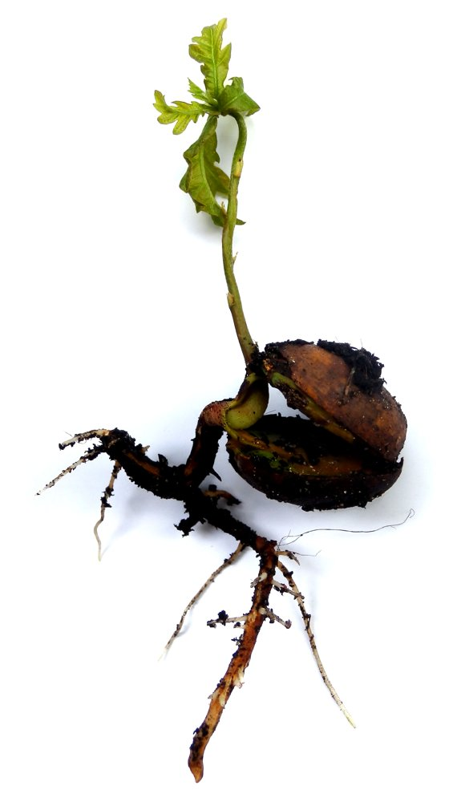
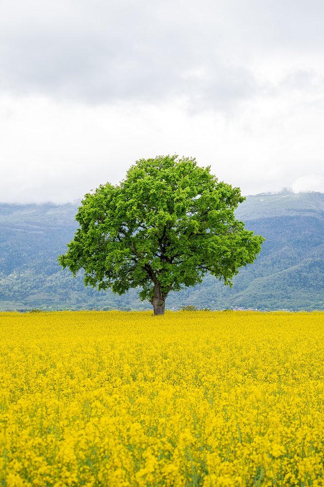
Eikenøtt: Amphis, CC BY-SA 3.0 · Eik: ZarlokX, CC BY-SA 4.0
Mekanistisk natursyn
- Naturen som «maskin», uten formål
- Harvey (1628): hjertet er en pumpe, og blodet sirkulerer
- Bioingeniør: labmedisinens mekanistiske modell av sykdom
- Bare bevirkende årsaker, og det som teller, kan måles
Storjordspurven og nebbet
- Fuglearten storjordspurv (Geospiza magnirostris) på Galápagos har et uvanlig kraftig nebb
- Én av Darwins finkearter: ulikt nebb tilpasset ulik føde, blant hans sterkeste belegg for naturlig utvalg
- Spørsmålet her: hva forklarer nebbet, teleologisk eller evolusjonært?
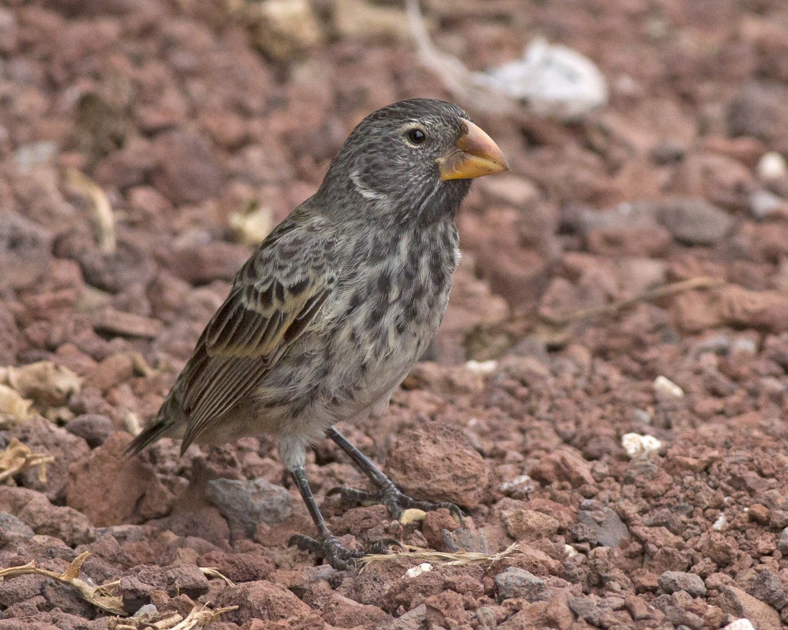
Lip Kee Yap, CC BY-SA 2.0
Storjordspurven har et uvanlig kraftig nebb. Hvilket alternativ er en teleologisk forklaring på nebbet?
Hva kjennetegner et teleologisk (aristotelisk) natursyn?
Tenk! s. 154
Fordypning
Fire typer forandring
Aristoteles, med eplet fra blomst til jord:
- Stedsbevegelse: eplet faller fra greina
- Kvalitativ: grønt, rødt, brunt
- Kvantitativ: vokser i størrelse og vekt
- Radikal: blir til og går til grunne (råtner, blir jord)
Hvilket utsagn stemmer best med det mekanistiske natursynet?
Tenk! s. 160
Primære og sekundære egenskaper
- Primære: størrelse, form, posisjon, bevegelse. Kan måles
- Sekundære: farge, smak, lukt. Slik sansene våre reagerer
- Bioingeniør: blodverdien er «primær». Hva så med pasientens opplevelse?
Homeostase: klarer vi oss uten formål?
- Kroppen holder blodsukker, temperatur og pH innenfor snevre grenser
- Kan vi beskrive dette uten å si hva det er godt for?
- Kan vi beskrive hjertet uten å si at det er til for å pumpe blod?
«Utvilsomt»?
- Tenk! s. 223: «Vi er utvilsomt et produkt av evolusjon»
- Men etter Popper er en teori i beste fall ennå ikke falsifisert
- Kan boka da si «utvilsomt»? Og kan evolusjonsteorien falsifiseres?
Oversikt
Kjerne
- Enhetsvitenskap blodprøven, John Snow
Fordypning
- Reduksjonisme ett kart for alt?
- Bro hvor er humaniora?
- Spørsmål: enhetsvitenskap
Enhetsvitenskap
- Hvorfor fikk hun kolera? Bakterien (mikrobiologi), vannet (epidemiologi), fattigdom (samfunnsfag)
- Alle forklaringene kan være riktige samtidig
- Enhetsvitenskap: forklaringene kan «forbindes», f.eks. oversettes til en mer grunnleggende vitenskap
Fordypning
Reduksjonisme: ett kart for alt?
- Reduksjonisme: alt sant om X kan sies i Ys språk (håp som hjernetilstander)
- Én virkelighet, men vi trenger både veikart og nedbørskart
- Bioingeniør: kan en sykdom forstås bare fra laboratorieverdier?
Hvor er humaniora?
Tekster, handlinger, mening: hvor passer de inn?
Hva går ideen om enhetsvitenskap ut på?
Tenk! s. 145
Oversikt
Kjerne
- Dilthey og Gadamer
- Forklare eller forstå CRP og pasientens fortelling
- Forforståelse og hermeneutisk sirkel
- Forståelseshorisont
- Lagquiz: den hermeneutiske sirkelen
Fordypning
- Hvor enig: helsevitenskap og naturvitenskap
- Gadamer i helsefagene diskusjon
- To innvendinger mot Gadamer
Dilthey og Gadamer
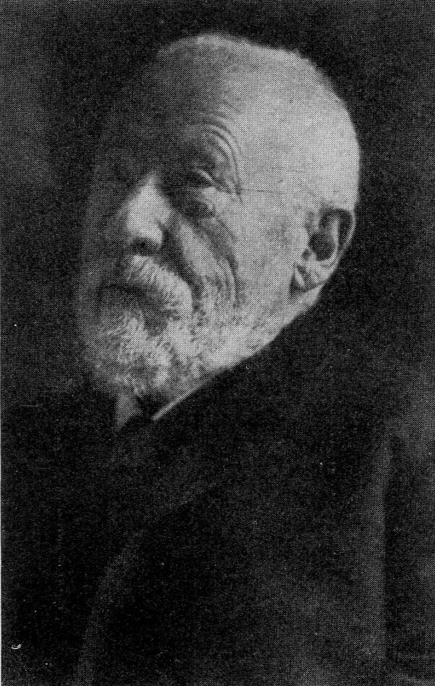
Wilhelm Dilthey (1833–1911). Tysk filosof.
«Innføring i åndsvitenskapene» (1883)
Public domain
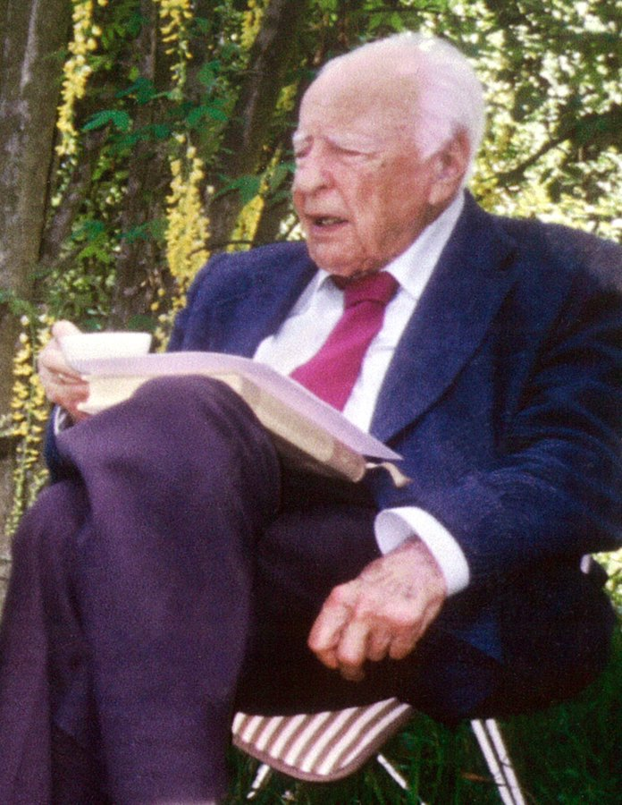
Gadamer (1900–2002). Tysk filosof.
«Wahrheit und Methode» (1960)
Leena Ruuskanen, CC BY 3.0
Forklare eller forstå?
«Vi forklarer naturen, sjelelivet forstår vi» (Dilthey)
| Forklare | Forstå | |
|---|---|---|
| Studerer | Naturfenomener | Meningsbærende uttrykk |
| Spør etter | Årsak, virkning, lover | Mening og intensjon |
| Helseeksempel | Hvorfor er betennelsesverdien (CRP) høy? | Hva betyr sykdommen for pasienten? |
«Det er like viktig å vite hva slags pasient sykdommen har, som hva slags sykdom pasienten har» (ofte tilskrevet Hippokrates, men sporet til 1899)
Forforståelse og hermeneutisk sirkel
- Vi møter aldri noe forutsetningsløst: Gadamers «for-dommer»
- For-dommene begrenser, men gjør også forståelse mulig
- Sirkelen: del og helhet forstås ut fra hverandre
- Gadamer: også mellom deg og teksten, der for-dommene rettes: en spiral
Forståelseshorisont
- Horisonten: all vår historisk betingede forforståelse
- Vi kommer aldri utenfor den, men den kan utvides
- Sykepleieren har lest journalen, men pasienten passer ikke med bildet
- Horisontsammensmelting: min horisont møter den andres, og begge endres
Hva er den hermeneutiske sirkelen?
Thomassen ss. 169–71
Fordypning
Hvor enig er du i utsagnet
«Helsevitenskapene er vesensforskjellige fra naturvitenskapene»
1 (uenig) til 5 (enig)
Gadamer i helsevitenskapene
- Sykepleie: forforståelse i møtet med pasienten
- Bioingeniør: tolkning av «grensetilfelle»-prøvesvar
- Thomassen: helse- og sosialfag som «relasjonsprofesjoner» (s. 186)
To innvendinger mot Gadamer
- Habermas: tradisjon kan skjule makt og undertrykkelse. Skal den ha autoritet?
- Metodehermeneutikk: uten objektivitetsideal, hva stopper «ville» tolkninger?
- Øvelse: sett én av dem opp som standpunkt med argumenter
Lagquiz: samlet poengtavle
Begreper, uke 40
Tenk! Thomassen
- overraskelsesprinsippet (ss. 113–5), base rate (ss. 115–6), KUDOS og prosedyrekriterier (s. 123, ss. 127, 129), situert kunnskap (ss. 126–8)
- oppdagelses- og begrunnelseskontekst (s. 95), paradigme og normalvitenskap (s. 132), inkommensurabilitet (s. 135), fremskritt (s. 136), realisme, relativisme og konstruktivisme (ss. 133, 140)
- enhetsvitenskap (s. 145), reduksjonisme (s. 146), teleologi og substans/form/stoff (s. 154), fire årsaker (s. 156), mekanistisk natursyn (s. 160), primære og sekundære egenskaper (s. 161)
- hermeneutikk (s. 163), forklare og forstå (ss. 166–7), forforståelse og hermeneutisk sirkel (ss. 169–71), forståelseshorisont og horisontsammensmelting (s. 170, 175)
Alle begreper er nå dekket på egne slides ovenfor. NB: begrepslisten merker denne bolken «uke 41» og «uke 42», utdatert i forhold til årets undervisningsplan.
Takk for i dag!
Amulet Peak, Matanuska-elva. Foto: Philip Kuntz, CC BY-SA 4.0